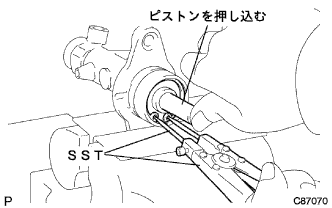

Brake Master Cylinder ASSY decomposition |
| 1. Brake Master Cylinda Union removed |
 |
Use a ping -punch (5mm) and a hammer to punch the ring pin and remove the brake master cylinder union.
| 2. Remove check valve gromet |
 |
Remove two check -valubglomets from the brake master cylinder associate.
| 3. The brake master cylinder kit is removed |
Fix the master cylinder body to the vise via an aluminum plate.
Use a negative thin blade driver to remove the O -ring.
 |
Push in the piston and remove the straight pin down the brake master cylinder union.
|  |
With the piston pushed in, use the SST to remove the snap ring.
Pull out the No.1 piston sab ASSY from the master cylindabose and remove it.
Remove the piston guide, cylinder cup and plate No.1 piston.
Until the end face of the No.2 piston comes out, lightly hit the flange part with a piece of wood, etc., and if the end face comes out, pull the No.2 piston straight from the master cindabose and remove it.